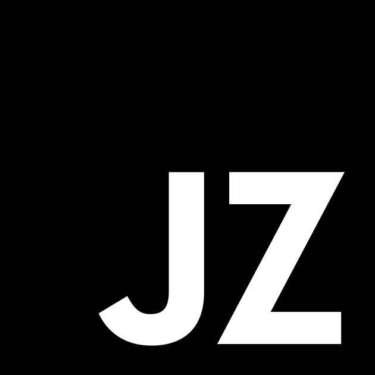

Computational JS
at native speed
Compile JS to WASM ahead of time: same source, 2.5× faster.
For DSP, visuals, simulation, physics.
··op/s

Compile JS to WASM ahead of time: same source, 2.5× faster.
For DSP, visuals, simulation, physics.
It's a compiler for a distilled subset of JavaScript — Crockford’s “good parts”. Valid JZ is valid JS: the same file runs as plain JS in any engine, or compiles unchanged to a fast, portable .wasm. No runtime, no GC, no annotations — auto-vectorized, deterministic output.
Good for: DSP & audio, image & video, simulation & physics, parsers & codecs, games & demoscene, numerical & scientific computing — any compute-bound hot loop.
Not for: async, server glue, DOM/UI, OOP/dynamic/polymorphic code, string-templating, allocation-heavy, I/O, anything not hot — compiling it adds zero gain, keep those in regular JS.
.wasm runs on par with native C — and about 2.4× faster than that same C compiled to WASM, because JZ auto-vectorizes where the C→wasm path doesn’t. Need a real binary? jz → wasm2c → clang -O3 carries it the rest of the way to native. See the bench →let x = 0.5, Float32Array, index, counter in a loop — you know the types without being told, and so does JZ. Annotations add nothing a reader (or a model) can’t already see; they just bolt a second language onto your logic. Anything genuinely dynamic falls back to a slower, always-correct path.let/const, arrows, loops, objects, arrays, typed arrays, Math/String/JSON/RegExp (legacy var/function/class/== is lowered for you). Numbers are f64 (i32 when provably integer), strings UTF-8, objects fixed-shape, no GC. No async, generators, DOM, fetch, or Node — those stay in regular JS. Full list →jz.wasm, and CI gates every commit on that self-compiled build passing the full suite. A compiler that compiles itself handles real, substantial JavaScript — not just demo kernels. jz kernel.js) or the API (compile()) — and out comes a plain .wasm you load like any other module. Setup & options →